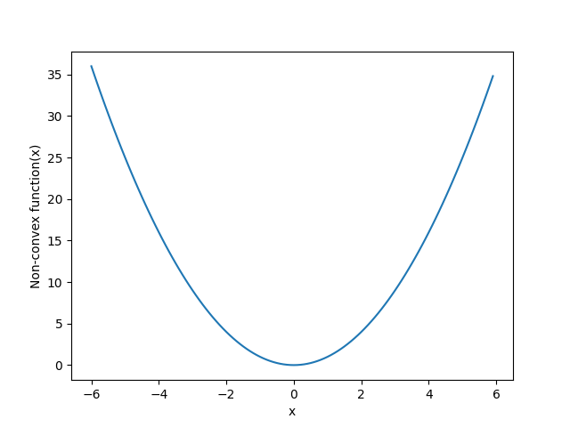
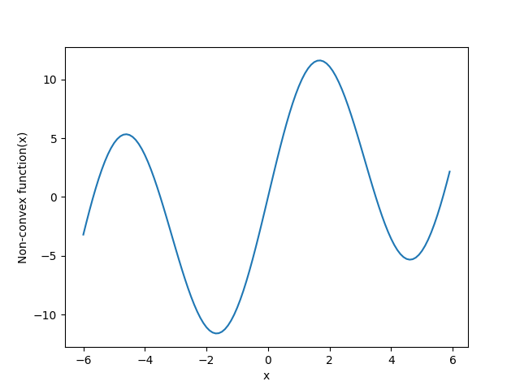
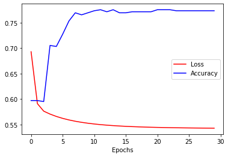

Logistisk regresjon og gradient descent
Den første ekte læringsalgoritmen i kurset. Vi bygger en modell som gir en sannsynlighet, finner en tapsfunksjon som sier hvor feil den er, og lar gradient descent skru på parametrene til tapet er minst mulig. Akkurat den samme oppskriften trener nevrale nettverk senere.
Etter dette kapittelet skal du kunne
- skrive opp modellen $y_{pred} = \sigma(w\mathbf{x} + b)$ og forklare hvorfor vi trenger sigmoid
- forklare antakelsen om ingen vekselvirkninger og hvorfor beslutningsgrensen er lineær
- utlede binary cross-entropy fra likelihood, og forklare log og minustegn
- forklare gradient descent, læringsraten, konveksitet og hvorfor tapet må være deriverbart
- utlede $\partial L / \partial w_j = (y_{pred} - y)x_j$ og $\partial L/\partial b = y_{pred} - y$ trinn for trinn
- regne ett gradient-steg for hånd med kalkulator
- lese og skrive en vektorisert implementasjon med
fitogpredict, og tolke tap- og accuracy-kurver
2.1Fra lineær modell til sannsynlighet
Vi fortsetter med Titanic fra kapittel 1. Vi vil ha en modell som tar inn features $\mathbf{x}$ (klasse, kjønn, alder) og gir sannsynligheten for å overleve. Den enkleste modellen vi kan tenke oss er en lineær modell:
Lineær modell (likning 2 i notatene)
$$z = \sum_{j=1}^{n} w_j x_j + b = w\mathbf{x} + b$$Hver vekt (weight) $w_j$ sier hvor viktig feature $x_j$ er for utfallet, og hvilken retning den drar: positiv $w_j$ betyr at større $x_j$ gir større $z$. Bias $b$ er konstantleddet, som flytter hele uttrykket opp eller ned uavhengig av features.
Notatene ber deg tenke over dette: Er $z = w\mathbf{x} + b$ et tall eller en vektor, for ett datapunkt?
- Et tall (skalar), fordi $w\mathbf{x}$ er et prikkprodukt
- En vektor med $n$ elementer, én per feature
- En matrise med størrelse $n \times n$
- Det avhenger av hvor mange datapunkter vi har
La $w = (2, -1, 0.5)$, $b = 0.5$ og $\mathbf{x} = (1, 3, 2)$. Hva er $z$?
Problemet med z, og sigmoid som løsning
$z$ kan bli et hvilket som helst reelt tall: $-37$, $0.2$, $1500$. Men vi vil ha en sannsynlighet, altså et tall mellom 0 og 1. Løsningen er å sende $z$ gjennom den logistiske funksjonen, også kalt sigmoid fordi den er formet som en S:
Sigmoid (likning 3) og modellens prediksjon (likning 4)
$$\sigma(z) = \frac{1}{1 + e^{-z}} \qquad\Longrightarrow\qquad y_{pred} = \sigma(w\mathbf{x}+b) = \frac{1}{1 + e^{-(\sum_j w_j x_j + b)}}$$Noen verdier det lønner seg å kunne utenat:
| $z$ | $-\infty$ | $-2$ | $0$ | $2$ | $+\infty$ |
|---|---|---|---|---|---|
| $\sigma(z)$ | $\to 0$ | $\approx 0.12$ | $0.5$ | $\approx 0.88$ | $\to 1$ |
- Den gir verdier i det åpne intervallet $(0,1)$, aldri nøyaktig 0 eller 1.
- Den er monoton: større $z$ gir alltid større sannsynlighet, så rekkefølgen fra den lineære modellen bevares.
- Den er glatt og deriverbar overalt, med en ekstremt pen derivert: $\sigma'(z) = \sigma(z)(1 - \sigma(z))$. Det trenger vi for gradient descent.
- Den dukker opp igjen som aktiveringsfunksjon i nevrale nettverk (kapittel 9), så den er verdt å huske.
En logistisk regresjonsmodell gir $y_{pred} = \sigma(w\mathbf{x}+b)$. Hvilket utsagn om $y_{pred}$ er riktig?
- Den er alltid nøyaktig 0 eller 1
- Den er garantert lik den sanne sannsynligheten for hendelsen
- Den avhenger ikke av $w$ og $b$ etter at modellen er trent
- Den er et tall i $(0,1)$ og kan tolkes som modellens estimerte sannsynlighet for klasse 1
Antakelsen: ingen vekselvirkninger
Se på $z = w_1 x_1 + w_2 x_2 + b$. Øker vi $x_1$ med 1, øker $z$ med nøyaktig $w_1$, uansett hva $x_2$ er. Effekten av én feature er uavhengig av de andre. Vi sier at modellen antar at det ikke er vekselvirkninger (interaksjoner) mellom features.
I virkeligheten finnes vekselvirkninger hele tiden. Kanskje det å være barn økte sjansen for å overleve mye på første klasse, men lite på tredje. Det kan ikke en lineær modell uttrykke med bare $x_1$ og $x_2$.
Eksamen 2024 oppg. 1: «Hvilken antakelse gjør en lineær modell om dataene?» Riktig: at det ikke er vekselvirkninger mellom features. Distraktorer: «antar høy bias», «antar at den vil undertilpasse», og det motsatte, «effekten av hver variabel avhenger av andre variabler».
En modell har $z = 0.8 x_1 - 0.3 x_2 + 0.1$. Hvor mye endres $z$ hvis $x_1$ øker fra 2 til 3, når $x_2 = 10$? Og når $x_2 = -5$?
- $0.8$ når $x_2 = 10$, og $-0.7$ når $x_2 = -5$
- $0.8$ i begge tilfeller
- $0.8 \cdot 10 = 8$ og $0.8 \cdot (-5) = -4$
- Det kan ikke avgjøres uten å vite $b$
Lineær beslutningsgrense, og når den ikke holder
Vi velger klasse 1 når $y_{pred} \gt 0.5$. Siden $\sigma(z) = 0.5$ nøyaktig når $z = 0$, er grensen mellom klassene:
Beslutningsgrensen
$$y_{pred} = 0.5 \iff z = w\mathbf{x} + b = 0$$Med to features er $w_1 x_1 + w_2 x_2 + b = 0$ en rett linje; med tre features et plan; med flere et hyperplan. Logistisk regresjon kan altså bare skille klasser med en rett grense. Det er modellens induktive bias (kapittel 1).
En modell har $w = (2, -1)$ og $b = -1$. Et datapunkt har $\mathbf{x} = (1, 0.5)$. Hvilken klasse predikerer modellen med terskel 0.5? (Svar 0 eller 1.)
Hva om dataene ikke kan skilles av en rett linje? Da hjelper ingen mengde trening. Trikset er feature engineering: lag nye features av de gamle, slik at problemet blir lineært i de nye. Hvis klassene ligger i et XOR-mønster (klasse 1 i to motstående kvadranter), er produktet $x_1 x_2$ positivt i den ene klassen og negativt i den andre. Legger vi til $x_3 = x_1 x_2$ som feature, blir modellen
som fortsatt er lineær i parametrene (så alt i dette kapittelet gjelder), men gir en krum grense i det opprinnelige $(x_1, x_2)$-rommet. Og legg merke til at $x_1 x_2$ nettopp er et vekselvirkningsledd. Du kan prøve dette selv i widgeten i seksjon 2.7.
Kravet var minst 0.88 test-accuracy på data som er «not linearly separable». Logistisk regresjon på rå $x_0, x_1$ gir rundt 0.5, altså som å kaste mynt, fordi klassene ligger i et rotert XOR-lignende mønster. ❓ «Explain poor initial performance and your improvements»: den lineære grensen (induktiv bias) passer ikke dataene. Med en produkt-feature $x_0 x_1$ kommer modellen godt over 0.88 (vi fikk rundt 0.90 i en rask test). Kvadratiske features som $x_0^2, x_1^2$ alene hjelper mindre her; det er vekselvirkningen som bærer informasjonen.
Logistisk regresjon har bare en linjal. Den kan bare tegne rette streker. Vil du ha en krum grense, må du bøye arket (lage nye features) så en rett strek på det bøyde arket blir krum når du bretter det ut igjen.
2.2Tapsfunksjonen: hvor feil er modellen?
Før modellen kan gi gode prediksjoner, må den tilpasses dataene. Det kalles trening (læring). Dataene vi bruker til det er treningsdata, og funksjonen som måler hvor godt modellen gjør det er tapsfunksjonen (loss function), skrevet $L(y_{pred}, y)$. Den sier hvor langt prediksjonen er fra target, for ett datapunkt.
Hvilken tapsfunksjon? Det avhenger av oppgaven. Vi vil maksimere sannsynligheten for riktig klassifisering: at $y_{pred}$ er stor når $y = 1$, og liten når $y = 0$. Kompakt kan vi skrive sannsynligheten modellen gir det riktige svaret som:
Sannsynligheten for riktig klasse (likning 6)
$$y_{pred}^{\,y}\,(1 - y_{pred})^{1-y}$$Notatene har en oppgave til dette uttrykket: Hva er verdien når $y_{pred} = 1$ og $y = 1$? Og for de andre kombinasjonene? Prøv før du åpner svaret.
Svar: alle fire kombinasjoner
| $y_{pred}$ | $y$ | Utregning | Verdi | Tolkning |
|---|---|---|---|---|
| 1 | 1 | $1^1 \cdot 0^0$ | 1 | Helt sikker og riktig |
| 0 | 0 | $0^0 \cdot 1^1$ | 1 | Helt sikker og riktig |
| 1 | 0 | $1^0 \cdot 0^1$ | 0 | Helt sikker og feil |
| 0 | 1 | $0^1 \cdot 1^0$ | 0 | Helt sikker og feil |
(Vi bruker konvensjonen $0^0 = 1$.) Trikset er at eksponentene fungerer som en bryter: når $y = 1$ forsvinner den andre faktoren (opphøyd i 0 blir 1), og uttrykket blir $y_{pred}$. Når $y = 0$ forsvinner den første, og uttrykket blir $1 - y_{pred}$. Uttrykket er altså sannsynligheten modellen ga til den klassen som faktisk var riktig.
I praksis er $y_{pred}$ aldri nøyaktig 0 eller 1. Med $y_{pred} = 0.7$: hvis $y = 1$ får vi $0.7$, og hvis $y = 0$ får vi $0.3$.
Modellen gir $y_{pred} = 0.8$ for et datapunkt der $y = 0$. Hva er $y_{pred}^{\,y}(1-y_{pred})^{1-y}$?
Likelihood: data er gitt, modellen kan endres
Vi vil ikke endre dataene slik at de passer modellen. Vi vil endre modellen slik at sannsynlighetene passer dataene. Dataene er gitt; parametrene $w$ og $b$ er det vi kan skru på. Setter vi inn $y_{pred} = \sigma(w\mathbf{x}+b)$, får vi:
Likelihood (likning 7)
$$\mathcal{L}(w, b \mid \mathbf{x}, y) = \sigma(w\mathbf{x}+b)^{\,y}\,\bigl(1 - \sigma(w\mathbf{x}+b)\bigr)^{1-y}$$Dette er en likelihood (derav bokstaven L). Samme formel kan leses på to måter, og forskjellen ligger i hva som er kjent:
Parametrene er kjent (modellen er satt). Vi spør: hvor sannsynlig er ulike observasjoner $\mathbf{x}, y$ som vi ikke har sett ennå? Det er det vi gjør ved inferens.
Dataene er observert. Vi spør: hvor godt passer ulike verdier av parametrene $w, b$ med det vi har sett? En funksjon av parametrene, gitt data. Det er det vi gjør ved trening.
Sannsynlighet: «Gitt terningen, hva blir kastene?» Likelihood: «Gitt kastene, hvilken terning var det?» Ved trening har vi kastene (dataene) og leter etter terningen (parametrene).
Fra likelihood til cross-entropy: log og minustegn
Uttrykket i likning 7 er vanskelig å jobbe med på grunn av eksponentene. Og over mange datapunkter blir likelihood et produkt av mange tall mellom 0 og 1, som raskt blir forsvinnende lite. Siden vi bare vil finne hvor optimum ligger, kan vi ta logaritmen. Logaritmen er monoton (strengt voksende), så den flytter ikke optimum:
Log-likelihood (likning 8–9)
$$\ln \mathcal{L}(w,b \mid \mathbf{x},y) = y \ln \sigma(w\mathbf{x}+b) + (1-y)\ln\bigl(1 - \sigma(w\mathbf{x}+b)\bigr)$$Log gjør eksponenter til faktorer ($\ln a^y = y \ln a$) og produkter til summer ($\ln(ab) = \ln a + \ln b$). Likelihood for riktig klasse skal maksimeres. Men konvensjonen i maskinlæring er å minimere et tap. Så vi setter et minustegn foran:
Binary cross-entropy (likning 10–11): tapsfunksjonen vi bruker
$$L(y_{pred}, y) = -\ln\mathcal{L} = -y \ln y_{pred} - (1-y)\ln(1 - y_{pred})$$Bryter-trikset virker fortsatt: for $y = 1$ er tapet $-\ln y_{pred}$, og for $y = 0$ er tapet $-\ln(1 - y_{pred})$.
Fordi $-\ln$ går mot uendelig nær 0, gir cross-entropy enorme tap (og store gradienter) for selvsikre feil. Modellen presses hardt til å rette opp de verste feilene først. Samtidig gir den nesten null tap når modellen er sikker og riktig, så de punktene bidrar lite til videre læring.
To datapunkter: (A) $y = 1$, $y_{pred} = 0.8$ og (B) $y = 0$, $y_{pred} = 0.9$. Hva er det gjennomsnittlige cross-entropy-tapet? Bruk $\ln 0.8 \approx -0.223$ og $\ln 0.1 \approx -2.303$.
Hvorfor tar vi logaritmen av likelihood før vi optimerer?
- Fordi log er monoton (samme optimum), og gjør produkter og eksponenter til summer og faktorer som er lettere å derivere og numerisk stabile
- Fordi logaritmen gjør funksjonen lineær, slik at vi kan løse den eksakt
- Fordi log gjør at tapet alltid er negativt, som er nødvendig for minimering
- Fordi log fjerner behovet for sigmoid-funksjonen
Hvorfor er det et minustegn foran log-likelihood i cross-entropy?
- For å gjøre funksjonen konveks
- Fordi den deriverte av $\ln x$ er negativ
- Fordi vi vil maksimere likelihood, men gradient descent og konvensjonen er å minimere et tap; å maksimere $f$ er det samme som å minimere $-f$
- For å kompensere for at sigmoid gir verdier under 0.5
Treningsproblemet
Modellen er definert av parametrene $w$ og $b$, kompakt $\theta = (w, b)$. Å trene modellen betyr å finne parametrene som minimerer tapet i gjennomsnitt over alle de $N$ treningspunktene:
Optimaliseringsproblemet (likning 12)
$$\hat{\theta} = \arg\min_{\theta}\; \frac{1}{N}\sum_{i=1}^{N} L\bigl(f(\mathbf{x}^{(i)}; \theta),\, y^{(i)}\bigr)$$$\arg\min$ betyr «den verdien av $\theta$ som gir minst verdi», ikke selve minimumsverdien. Hatten på $\hat\theta$ betyr at det er et estimat basert på data. Siden vi minimerer minus log-likelihood, er dette det samme som å maksimere log-likelihood for target-verdiene $y$ gitt hvert datapunkt $\mathbf{x}$. Det kalles conditional maximum likelihood estimation: «betinget» fordi vi modellerer $p(y \mid \mathbf{x})$, ikke $\mathbf{x}$ selv.
Hva betyr $\hat\theta = \arg\min_\theta J(\theta)$?
- $\hat\theta$ er den minste verdien $J$ kan ta
- $\hat\theta$ er den minste parameteren i $\theta$
- $\hat\theta$ er gradienten til $J$ i minimumspunktet
- $\hat\theta$ er parameterverdiene som gir lavest $J$
Å bruke kvadratfeil (MSE) som tap for logistisk regresjon. Kombinert med sigmoid blir MSE ikke-konveks i parametrene, og gradienten blir nesten null når modellen er selvsikkert feil (sigmoid er flat der). Cross-entropy har ingen av problemene: den er konveks for logistisk regresjon, og gradienten blir enkel, som vi skal se.
2.3Gradient descent
Vi har en tapsfunksjon og vil finne parametrene som minimerer den. For logistisk regresjon finnes det ingen formel som gir svaret direkte. Vi trenger en metode for å finne minimum av en funksjon vi ikke kjenner formen til: gradient descent.
Du står på et fjell med bind for øynene og skal ned til det laveste punktet. Du ser ingenting, men du kan kjenne helningen under føttene. Beste strategi: kjenn etter hvilken vei det går brattest nedover, ta et skritt dit, og gjenta. Helningen er gradienten, skrittlengden er læringsraten, og din posisjon er parametrene.
Notatene spør: Hvilken retning bør vi bevege oss i? I hvilket rom?
- Rommet er parameterrommet, utspent av $\theta$-verdiene. Har vi fire parametre (tre vekter og en bias), er rommet firedimensjonalt. Vi går ikke rundt blant datapunktene; vi flytter på $w$ og $b$.
- Retningen er den der tapet minker. Vi trenger altså den deriverte av $L$ med hensyn på $\theta$: gradienten $\partial L / \partial \theta$. Gradienten peker mot økende tap, så vi går i motsatt retning.
Oppdateringsregelen (likning 13)
$$\theta_{t+1} = \theta_t - \eta\, \frac{\partial}{\partial \theta} L\bigl(f(\mathbf{x};\theta), y\bigr)$$Vi starter med en tilfeldig (eller null) verdi for parametrene, og oppdaterer dem iterativt. Minustegnet gjør at vi går nedover. $\eta$ (eta) er læringsraten (learning rate): hvor store korrigeringer vi gjør per steg.
Hele metoden bygger på den deriverte. Uten gradient vet vi ikke hvilken vei som er nedover. Siden gradient descent brukes nesten overalt i maskinlæring, også i nevrale nettverk, er dette en viktig lærdom: tapsfunksjonen må være deriverbar. Det er grunnen til at vi ikke kan trene direkte på accuracy: accuracy endrer seg i hopp (et punkt er enten riktig eller feil), så den deriverte er null nesten overalt og udefinert i hoppene.
$\eta$ er en parameter vi justerer for at treningen skal gå best mulig, men den er ikke en del av modellen. Den definerer læringsprosessen. Det er en hyperparameter (se kapittel 1 og eksamen 2024 oppg. 12).
Konvekse og ikke-konvekse funksjoner


En utfordring er at en funksjon kan ha både lokale og globale minima. Et lokalt minimum har høyere funksjonsverdi enn det globale, men helningen peker oppover i alle retninger rundt det, så gradient descent blir stående. I fjell-analogien: du har gått deg vill i en fjellkjede og står i en dal uten å vite at det finnes en dypere dal bak neste topp.
Tapsfunksjonen for logistisk regresjon er konveks: den har bare ett minimum (en «skål»). Så lenge funksjonen er konveks, har vi en garanti: et minimum gradient descent finner er det globale. For nevrale nettverk er tapet ikke-konvekst, og den garantien forsvinner (kapittel 10).
Eksamen 2024 oppg. 20: «I hvilket tilfelle vet vi at gradient descent vil finne et globalt minimum?» Riktig: konvekse funksjoner. Distraktorer: lineær regresjon, nevrale nettverk, monotone funksjoner.
Læringsraten: for høy, for lav, passe
For $L(\theta) = \theta^2$ er gradienten $2\theta$, så oppdateringen blir $\theta_{t+1} = \theta_t - 2\eta\theta_t = (1 - 2\eta)\theta_t$. Det forklarer alt du så i widgeten:
| Læringsrate | $1 - 2\eta$ | Hva skjer |
|---|---|---|
| $0 \lt \eta \lt 0.5$ | mellom 0 og 1 | Jevn konvergens. Liten $\eta$ gir treg trening. |
| $0.5 \lt \eta \lt 1$ | mellom $-1$ og 0 | Fortegnet skifter hvert steg: oscillering, men det konvergerer likevel. |
| $\eta = 1$ | $-1$ | Hopper evig mellom $\theta_0$ og $-\theta_0$. |
| $\eta \gt 1$ | under $-1$ | Divergens: hvert steg havner lenger unna, og tapet eksploderer. |
Grensene 0.5 og 1 gjelder akkurat denne funksjonen. For et ekte tap avhenger de av hvor bratt og krum funksjonen er, men mønsteret er det samme.
- For høy $\eta$: stegene skyter over minimum. Tapet oscillerer i stedet for å minke jevnt, eller øker til det eksploderer (NaN).
- For lav $\eta$: hvert steg er lite og trygt, men treningen tar svært mange epoker, og kan se ut som den har «stoppet opp» før den er ferdig.
Eksamen 2025 del 1.3: Trenings-tapet oscillerer i stedet for å minke jevnt, og implementasjonen er korrekt. Mest sannsynlige årsak: læringsraten er for høy.
Du trener logistisk regresjon med gradient descent. Tapet hopper opp og ned fra epoke til epoke i stedet for å minke jevnt. Koden er korrekt. Hva er den mest sannsynlige årsaken?
- Datasettet er perfekt lineært separerbart
- Modellen har for mange parametre til at gradient descent kan brukes
- Læringsraten er for høy
- Sigmoid-funksjonen er ikke deriverbar
Etter 1000 epoker minker tapet fortsatt sakte og jevnt, uten tegn til å flate ut. Hva er en rimelig konklusjon?
- Læringsraten kan være for lav, eller vi trenger flere epoker
- Læringsraten er for høy
- Modellen har funnet et lokalt minimum
- Tapsfunksjonen er ikke deriverbar
Hvilket utsagn om konveksitet og gradient descent er riktig?
- Gradient descent finner alltid det globale minimumet, uansett funksjon
- Tapsfunksjonen for logistisk regresjon har mange lokale minima, så vi må prøve mange startpunkt
- For en konveks funksjon er det globale minimumet alltid i $\theta = 0$
- Hvis tapet er konvekst, er et minimum gradient descent finner også det globale minimumet
$L(\theta) = \theta^2$, $\theta_0 = 3$ og $\eta = 0.1$. Hva er $\theta_1$ etter ett steg med gradient descent?
2.4Utledning av gradienten
For å bruke oppdateringsregelen trenger vi den deriverte av tapet med hensyn på hver vekt $w_j$ og på $b$. Notatene sier det er en god øvelse å gjøre dette for hånd, og her gjør vi det sammen. Først resultatet, så du vet hvor vi skal:
Gradientene for logistisk regresjon med cross-entropy (likning 22 og 25)
$$\frac{\partial L}{\partial w_j} = (y_{pred} - y)\,x_j \qquad\qquad \frac{\partial L}{\partial b} = y_{pred} - y$$«Feil ganger input.» Gradienten for $w_j$ er bare hvor feil vi var ($y_{pred} - y$) ganget med hvor mye feature $j$ var med på det ($x_j$). Bias har «input» lik 1, så gradienten er bare feilen. Samme form dukker opp for lineær regresjon med MSE (kapittel 6).
Tre nyttige relasjoner (likning 14–16 i notatene):
Bonus: hvorfor er $\sigma'(z) = \sigma(z)(1-\sigma(z))$?
Skriv $\sigma(z) = (1 + e^{-z})^{-1}$ og bruk kjerneregelen:
$$\sigma'(z) = -(1+e^{-z})^{-2} \cdot (-e^{-z}) = \frac{e^{-z}}{(1+e^{-z})^2} = \underbrace{\frac{1}{1+e^{-z}}}_{\sigma(z)} \cdot \underbrace{\frac{e^{-z}}{1+e^{-z}}}_{1 - \sigma(z)}$$Den siste faktoren er $1 - \sigma(z)$ fordi $1 - \frac{1}{1+e^{-z}} = \frac{1 + e^{-z} - 1}{1+e^{-z}} = \frac{e^{-z}}{1+e^{-z}}$. Konsekvens: den deriverte er størst ($0.25$) i $z = 0$ og går mot null når $|z|$ blir stor, der sigmoid er flat.
Utledning av $\partial L/\partial w_j$ steg for steg
Skriv $\sigma(\cdot)$ som forkortelse for $\sigma(w\mathbf{x}+b)$. Vi starter med tapet:
$$\frac{\partial L}{\partial w_j} = \frac{\partial}{\partial w_j}\Bigl[-y\ln\sigma(\cdot) - (1-y)\ln\bigl(1-\sigma(\cdot)\bigr)\Bigr]$$Steg 1: deriver logaritmene med $\frac{d}{dx}\ln x = \frac1x$ og kjerneregelen. Merk at den deriverte av $1 - \sigma$ er $-\sigma'$, så minustegnet foran andre ledd snur:
$$= -y\frac{1}{\sigma(\cdot)}\frac{\partial\sigma(\cdot)}{\partial w_j} + (1-y)\frac{1}{1-\sigma(\cdot)}\frac{\partial \sigma(\cdot)}{\partial w_j}$$Steg 2: sett på felles brøkstrek $\sigma(1-\sigma)$ og trekk ut $\frac{\partial\sigma}{\partial w_j}$:
$$= \frac{-y\bigl(1-\sigma(\cdot)\bigr) + (1-y)\sigma(\cdot)}{\sigma(\cdot)\bigl(1-\sigma(\cdot)\bigr)}\;\frac{\partial\sigma(\cdot)}{\partial w_j}$$Steg 3: forenkle telleren. $-y + y\sigma + \sigma - y\sigma = \sigma - y$. De to $y\sigma$-leddene kansellerer:
$$= \frac{\sigma(\cdot) - y}{\sigma(\cdot)\bigl(1-\sigma(\cdot)\bigr)}\;\frac{\partial\sigma(\cdot)}{\partial w_j}$$Steg 4: deriver sigmoid med kjerneregelen, $\frac{\partial \sigma(z)}{\partial w_j} = \sigma(z)(1-\sigma(z))\frac{\partial z}{\partial w_j}$:
$$= \frac{\sigma(\cdot) - y}{\sigma(\cdot)\bigl(1-\sigma(\cdot)\bigr)}\;\sigma(\cdot)\bigl(1-\sigma(\cdot)\bigr)\frac{\partial}{\partial w_j}(w\mathbf{x}+b)$$Steg 5: kanseller $\sigma(1-\sigma)$ oppe og nede, og bruk at $\frac{\partial}{\partial w_j}(w_1x_1 + \dots + w_jx_j + \dots + b) = x_j$ (alle andre ledd er konstanter med hensyn på $w_j$):
$$= \bigl(\sigma(w\mathbf{x}+b) - y\bigr)x_j = (y_{pred} - y)\,x_j$$Den vakre kanselleringen i steg 5 er ingen tilfeldighet: cross-entropy (log) og sigmoid (eksponentiell) «passer sammen» slik at $\sigma'$ forsvinner. Det er en hovedgrunn til at vi bruker akkurat denne tapsfunksjonen.
Utledning av $\partial L/\partial b$
Steg 1–4 er identiske, bare med $b$ i stedet for $w_j$. Vi ender opp med
$$\frac{\partial L}{\partial b} = \bigl(\sigma(w\mathbf{x}+b) - y\bigr)\frac{\partial}{\partial b}(w\mathbf{x}+b)$$og siden $\frac{\partial}{\partial b}(w\mathbf{x} + b) = 1$:
$$\frac{\partial L}{\partial b} = y_{pred} - y$$Over alle $N$ datapunkter minimerer vi gjennomsnittstapet, og den deriverte av et gjennomsnitt er gjennomsnittet av de deriverte:
Hvis $y = 1$ og $y_{pred} = 0.3$, er feilen $-0.7$: modellen er for lav. Gradienten for $w_j$ er $-0.7x_j$. Med positiv $x_j$ er den negativ, så $w_j - \eta \cdot (\text{negativ})$ øker $w_j$, som øker $z$ og dermed $y_{pred}$. Akkurat riktig vei. Er prediksjonen perfekt, er feilen 0 og ingenting endres. Og features som er 0 for et datapunkt, får ingen skyld for feilen.
For et datapunkt med $y = 0$ gir modellen $y_{pred} = 0.9$. Feature $x_2 = 3$. Hva skjer med $w_2$ i neste gradient-steg (med $\eta \gt 0$)?
- $w_2$ øker, fordi gradienten er positiv
- $w_2$ minker, fordi gradienten $(0.9 - 0)\cdot 3 = 2.7$ er positiv og vi trekker den fra
- $w_2$ er uendret, fordi $y = 0$ gjør gradienten null
- $w_2$ minker, fordi gradienten er negativ
Hvilke utsagn om gradienten $\partial L / \partial w_j = (y_{pred} - y)x_j$ er riktige?
- Hvis prediksjonen er perfekt ($y_{pred} = y$), er gradienten null
- Gradienten for $b$ er den samme som for $w_j$, bare uten faktoren $x_j$
- Gradienten inneholder faktoren $\sigma(z)(1-\sigma(z))$, så den blir liten når modellen er selvsikkert feil
- Store verdier av $x_j$ gir store gradienter for $w_j$, som er en grunn til å skalere features
2.5Ett gradient-steg for hånd
Slik regner du det på eksamen, med enkel kalkulator. Vi har:
Vekter $w = (0.5,\ -1)$, bias $b = 0$, læringsrate $\eta = 0.1$. Ett datapunkt $\mathbf{x} = (2,\ 1)$ med $y = 1$. Regn ut prediksjonen, tapet, gradientene og de nye parametrene.
Steg 1: Hva er $y_{pred}$?
Steg 2: Hva er $\partial L/\partial w_1$?
Steg 3: Hva blir den nye verdien av $w_1$?
Steg 4: Regn ut tapet på nytt med de nye parametrene. Bruk $e^{-0.3} \approx 0.741$ og $\ln 0.5744 \approx -0.554$.
Eksamen 2024 oppg. 2 var en slik håndregning, men for lineær regresjon med $L = \frac12(y - f(x))^2$: $f(x) = wx + b$, start $w, b = 1, 0$, datapunkt $x=2, y=4$, $\alpha = 0.1$. Gradientene har samme form, «feil ganger input»: $\partial L/\partial w = (f(x) - y)x = (2-4)\cdot 2 = -4$ og $\partial L/\partial b = -2$, som gir $w = 1.4$ og $b = 0.2$. Se kapittel 6.
Lignende oppgave: lineær modell $f(x) = wx + b$ med $L = \frac12(y - f(x))^2$. Start $w = 2$, $b = 1$, datapunkt $x = 1$, $y = 5$, læringsrate $0.1$. Hva blir ny $w$?
2.6Fra formel til kode
Nå har vi alt: en modell, parametrene som definerer den, en tapsfunksjon, og en regel for å oppdatere parametrene så tapet minker. Et program som gjør disse stegene er en læringsalgoritme. Notatene foreslår denne strukturen (her med metodene fylt ut og vektorisert med numpy):
import numpy as np
class LogisticRegression:
def __init__(self, learning_rate=0.1, epochs=1000):
self.learning_rate = learning_rate # hyperparameter η
self.epochs = epochs # hyperparameter
self.weights, self.bias = None, None # modellparametre θ = (w, b)
self.losses, self.train_accuracies = [], []
def sigmoid_function(self, z):
return 1 / (1 + np.exp(-z))
def _compute_loss(self, y, y_pred):
eps = 1e-9 # unngå log(0)
return -np.mean(y * np.log(y_pred + eps) + (1 - y) * np.log(1 - y_pred + eps))
def compute_gradients(self, x, y, y_pred):
error = y_pred - y # (N,) «feilen»
grad_w = np.matmul(x.T, error) / len(y) # (n,) snitt av feil · x_j
grad_b = np.mean(error) # skalar
return grad_w, grad_b
def update_parameters(self, grad_w, grad_b):
self.weights -= self.learning_rate * grad_w # θ ← θ − η · gradient
self.bias -= self.learning_rate * grad_b
def fit(self, x, y):
self.weights = np.zeros(x.shape[1]) # x.shape = (datapunkter, features)
self.bias = 0
for _ in range(self.epochs): # én epoke = én gang gjennom alle data
z = np.matmul(x, self.weights) + self.bias # (N,) ett z per datapunkt
y_pred = self.sigmoid_function(z)
grad_w, grad_b = self.compute_gradients(x, y, y_pred)
self.update_parameters(grad_w, grad_b)
self.losses.append(self._compute_loss(y, y_pred))
self.train_accuracies.append(np.mean(y == (y_pred > 0.5)))
def predict(self, x):
y_pred = self.sigmoid_function(np.matmul(x, self.weights) + self.bias)
return (y_pred > 0.5).astype(int) # terskel 0.5 → klasse 0/1Noen ting å legge merke til:
- fit og predict: notatene understreker at disse navnene er så standard at du bør bruke dem også i egen kode.
fiter trening,predicter inferens. - Epoke: parameteren
epochsangir hvor mange ganger gradient descent går gjennom alle treningsdataene. Her regner vi gradienten på hele datasettet og gjør én oppdatering per epoke (full-batch gradient descent). Mini-batch og stokastisk GD, med flere oppdateringer per epoke, kommer i kapittel 10. - Terskel 0.5:
predictgjør sannsynligheter om til klasser. 0.5 er et valg, ikke en lov. Å flytte terskelen bytter falske positive mot falske negative (kapittel 3). - Vektorisert: i stedet for en Python-løkke over datapunkter regner
np.matmul(x, w)ut $z$ for alle $N$ punkter på én gang, ognp.matmul(x.T, error)summerer $\sum_i (y_{pred}^{(i)} - y^{(i)})x^{(i)}_j$ for alle $j$ på én gang. Det er både kortere og mye raskere. - Små avvik i notatene: notatkoden skriver
np.matmul(self.weights, x.transpose())ifit, som gir det samme somnp.matmul(x, self.weights), og kaller sigmoid_sigmoidett sted ogsigmoid_functionet annet. Bruk ett navn konsekvent.
Eksamen 2025 del 10.2: Gitt z = np.matmul(X, w) og y_pred = 1 / (1 + np.exp(-z)), med X av shape (n_samples, n_features) og w av shape (n_features,). Hva inneholder y_pred? Predikerte sannsynligheter i (0, 1) for hvert sample. Ikke klasse-labels (ingen terskel er brukt), ikke vilkårlige reelle tall (det er z), og ikke logaritmer.
X har shape (500, 3) og w har shape (3,). Hvilken shape har z = np.matmul(X, w) + b?
(3,), én verdi per feature(500, 3)(500,), én verdi per datapunkt- En skalar
(3,) er shapen til w og til gradienten grad_w.Du kjører z = np.matmul(X, w) og deretter y_pred = 1 / (1 + np.exp(-z)). Hva inneholder y_pred?
- Predikerte sannsynligheter i $(0,1)$ for hvert datapunkt
- Klasse-labels 0 eller 1 for hvert datapunkt
- Log-sannsynligheter for hvert datapunkt
- Én score per datapunkt som kan være et hvilket som helst reelt tall
z, så hvert element ligger i $(0,1)$ og tolkes som sannsynligheten for klasse 1. Klasse-labels krever en terskel, f.eks. (y_pred > 0.5). Ubegrensede reelle tall beskriver z (før sigmoid). Ingen logaritme er tatt.I fit-metoden over, med 400 treningspunkter og epochs=50: hvor mange ganger oppdateres parametrene?
- 400
- 50
- 20 000
- 8
2.7Trening i praksis: tap og accuracy over epoker
Når læringsalgoritmen er ferdig, splitter vi dataene i trening og test (kapittel 1) og trener:
log_reg = LogisticRegression(learning_rate=0.01, epochs=30)
log_reg.fit(X_train, y_train)
predictions = log_reg.predict(X_test)
epoch_list = np.arange(0, 30, 1)
plt.plot(epoch_list, log_reg.losses, c="red", label="Loss")
plt.plot(epoch_list, log_reg.train_accuracies, c="blue", label="Accuracy")
plt.legend(); plt.show()For å vite at programmet faktisk blir bedre gjennom erfaring (Mitchells P!), må vi måle ytelsen. Som et minimum lagrer vi tap og treffsikkerhet (accuracy) under treningen og plotter dem.

Hvordan leser vi dette plottet?
- Tapet minker og flater ut: bra. Modellen lærer, og har omtrent lært det den kan.
- Accuracy øker og flater ut: også bra.
- Begge flater ut: treningen har vart lenge nok. Hadde kurvene ikke flatet ut, trengte vi flere epoker. Her kunne vi stoppet etter rundt 20–25 epoker.
- Starttapet er ca. 0.693: det er ingen tilfeldighet. Med $w = 0$ og $b = 0$ er $z = 0$ og $y_{pred} = 0.5$ for alle, og tapet er $-\ln 0.5 = \ln 2 \approx 0.693$.
- Start-accuracy er ca. 0.6: med $y_{pred} = 0.5$ og regelen «klasse 1 hvis $y_{pred} \gt 0.5$» predikeres alle som klasse 0. Accuracy blir da andelen som ikke overlevde, omtrent 60 %.
- Accuracy er hakkete, tapet er glatt: accuracy endrer seg bare når et punkt krysser terskelen, så den hopper i trinn. Tapet reagerer på hver lille endring i sannsynlighetene. Det er også grunnen til at tapet, og ikke accuracy, er det vi deriverer.
Alle vekter og bias starter i 0. Hva er cross-entropy-tapet (gjennomsnitt over datasettet) før første oppdatering, uansett data? Bruk $\ln 2 \approx 0.693$.
Etter 100 epoker har tapet på treningsdata flatet ut på 0.69, og accuracy ligger rundt 50 % på et balansert datasett med to features. Hva er den mest sannsynlige forklaringen?
- Modellen trenger bare flere epoker
- Læringsraten er for høy
- Klassene kan ikke skilles av en rett linje i disse features, så modellen kan ikke gjøre det bedre enn å gjette; den trenger nye features
- Modellen har overtilpasset treningsdataene
Hvorfor kan vi ikke bruke accuracy direkte som tapsfunksjon i gradient descent?
- Fordi accuracy bare fungerer på testdata
- Fordi accuracy endrer seg i hopp: den deriverte er null nesten overalt, så den gir ingen retning å gå i
- Fordi accuracy alltid er lavere enn tapet
- Fordi accuracy er en hyperparameter
I figur 2.3 flater tapet ut rundt 0.54 og accuracy rundt 0.77. Betyr det at modellen vil ha 77 % treffsikkerhet på nye passasjerer? Hva mer vil du vite?
Forklar hele kjeden fra «vi vil ha en sannsynlighet» til «oppdater $w_j$ med $(y_{pred} - y)x_j$» med dine egne ord, uten formler. Hvilket steg synes du er minst intuitivt?
Du trener på Titanic med features Pclass (1–3), Sex (0/1) og Fare (0–512), uten skalering, og med én læringsrate. Hva tror du skjer, og hvorfor? Bruk formelen for gradienten.
Fordypning: log-odds, og hvorfor det heter «logistisk» ikke nødvendig til eksamen
Løs $p = \sigma(z)$ for $z$: $z = \ln\frac{p}{1-p}$. Forholdet $\frac{p}{1-p}$ kalles odds, og $\ln$ av det heter log-odds eller logit. Logistisk regresjon er altså en lineær regresjon på log-odds: hver ekstra enhet av $x_j$ ganger oddsen med $e^{w_j}$. Det gjør vektene tolkbare, og forklarer navnet: modellen er en regresjon (på log-odds) sendt gjennom den logistiske funksjonen.
Oppsummering
- Modell: $z = w\mathbf{x} + b$ (en skalar per datapunkt) og $y_{pred} = \sigma(z) = \frac{1}{1+e^{-z}} \in (0,1)$, tolket som $p(y=1 \mid \mathbf{x})$.
- Antakelse: ingen vekselvirkninger mellom features. Beslutningsgrensen $z = 0$ er lineær (linje/plan/hyperplan). Ikke-lineært separerbare data krever feature engineering, f.eks. $x_1 x_2$.
- $y_{pred}^{\,y}(1-y_{pred})^{1-y}$ = sannsynligheten modellen gir til riktig klasse. Som funksjon av parametrene, gitt data, er det en likelihood.
- Log (monoton, gjør produkter til summer) + minus (maks → min) gir binary cross-entropy: $L = -y\ln y_{pred} - (1-y)\ln(1-y_{pred})$. Selvsikre feil straffes hardt.
- Trening: $\hat\theta = \arg\min_\theta \frac1N \sum_i L^{(i)}$, altså conditional maximum likelihood.
- Gradient descent: $\theta_{t+1} = \theta_t - \eta\,\partial L/\partial\theta$ i parameterrommet. Tapet må være deriverbart. Konveks tap gir garantert globalt minimum; logistisk regresjon er konveks.
- Læringsrate $\eta$ er en hyperparameter. For høy: oscillering eller divergens. For lav: treg trening.
- Gradientene: $\partial L/\partial w_j = (y_{pred} - y)x_j$ og $\partial L/\partial b = y_{pred} - y$, «feil ganger input». Over $N$ punkter: ta snittet.
- Kode:
fit(epoker med GD) ogpredict(terskel 0.5). Vektorisert:z = X @ w + b,grad_w = X.T @ (y_pred - y) / N. - Kurver: tapet skal minke og flate ut, accuracy øke og flate ut. Med null-initialisering starter tapet på $\ln 2 \approx 0.693$.